Scrollbar


Om mijn development leeruitkomsten aan te tonen had ik wat POC's nodig. Deze heb ik dan ook een aantal gemaakt. Een van mijn projectjes is een custom scrollbar. Deze scrollbar is gemaakt doormiddel van een CSS animatie en een stukje javascript om hem te laten scrollen.
Om mijn portfolio wat meer persoonlijk te maken wilde ik een custom scrollbar gaan maken. Dit wilde ik om wat meer kleurmatching te krijgen op mijn portfolio. Ik heb de kleuren van de scrollbar gemixt met mint groen en cyaan. Dit waren eerst ook de kleuren die ik gebuikt had voor mij website. Ik heb cyaan er uiteindelijk in gehouden om niet alleen groen te gebruiken
Ik heb dit projectje gemaakt met behulp van internet, ik heb namelijk een tutorial gevolgd om deze scrollbar te maken. Ik de code is volledig in CSS het namelijk alleen een animatie. De kleuren die aangeeft om in je scrollbar te hebben bewegen door de scrollbar heen. Doorde blur en de gloed geeft dit een cool effect. Een kleine bug aan de scrollbar is dat hij op sommige pagina's niet helemaal tot het einde van de pagina komt.
Ik heb de code in mijn style.css file gezet en deze vervolgens gebruikt in al mijn HTML files.
Ik gebruik het id: scrollPath hier om te bepalen hoe breed de scrollbar word. Hierna voeg de optie voor kleur om de scrollbar toe.
Met het id: progressbar bepaal je hoe breed de gradient van de scroll bar moet zijn en geef je hem kleur doormiddel van een random gradient.
Door het gebruik van de keyframes kun je de kleuren laten bewegen, zo zie je dat de gradient 360 graden gedraaid wordt.
Via het id: progressbar:before en progressbar:before voeg ik een blur toe aan de scrollbar zodat je een neon effect krijgt op de balk.
Ik elk HTML file van mij staat onder aan een script die de scrollbar laat werken. Met dit stukje script bepaal je waar de scrollbar moet
staren en tot hoever hij moet gaan.
Github link
Ik heb geleerd hoe je een scrollbar kunt stijlen en hoe je de originele kan laten verdwijnen. Naast dat het ik dus ook geëxperimenteerd met animate in CSS. Ik ben benieuwd wat dit nog meer te bieden heeft.
Ik wil de volgende keer graag een andere custom scrollbar maken, zo leer ik telkens nieuwe technieken en kan ik deze wellicht toepassen in andere projecten.
Door alle portfolio reviews door heb ik niet echt feedback ontvangen over mijn scrollbar. Er werd gezegd dat hij er tof uit zag.